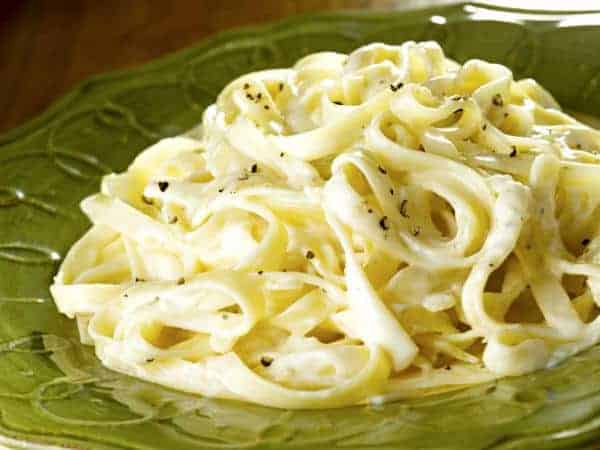

Onion Pasta

Description
"Onion Pasta" is a simple, tasty dish we cook at home.
It is basically any pasta you want, we choose spaghettis mostly,
and then make a caramelized onion sauce, with or without some cream.
Ingredients
Steps
- First boil the water.
- Then chop the onions and cook them with lots of sugar.
- Cook the pasta as you finish the onions.
- Serve the caramelized onions with the pasta.